Ein Procedural Terrain Generator für die Unity Engine. Er war ursprünglich gedacht zum Erstellen von maps für ein Strategiespiel. Allerdings hat der Terrain Generator bereits so viel Zeit verschlungen, dass ich den Rest des Spiels vorerst pausiert habe. Die Ziele für das Terrain waren folgende:
Die Map besteht aus einer Heightmap, also einem Array, das jedem Punkt eine Höhe zuordnet. Die Basis dieses Terrains ist eine Noise Map, die ich mit der Library Fast Noise Lite erstellt habe. Der standard Algorithmus dafür sind Perlin oder Simplex Noise, welche man überall im Internet findet und in vielen Games auch zur Anwendung kommen. Allerdings wird das Terrain damit meiner Meinung nach sehr langweilig und repetitiv. Vor allem Berge und Täler sehen sehr regelmässig und unrealistisch aus. Darum habe ich einige Nachforschungen betrieben und habe dabei in einem Paper von 2004(!) namens Realtime Procedural Terrain Generation eine Methode gefunden, die mir besonders gut gefallen hat. Dabei handelt es sich um das "Sub2-Voronoi" Diagram. Man erstellt dafür ein Diagram mit zufälligen Punkten. Der Wert eines Punktes in der Nosie Map ist dann die Distanz zum zweitnächsten Punkt minus die Distanz zum nächsten Punkt. Um die sehr geraden Linien, die dabei entstehen, etwas zu brechen verwende ich zusätzlich noch einen Domain-Warp, der den Raum etwas krümmt. Hier ein Vergleich zwischen Perlin und Sub2-Voronoi Noise:
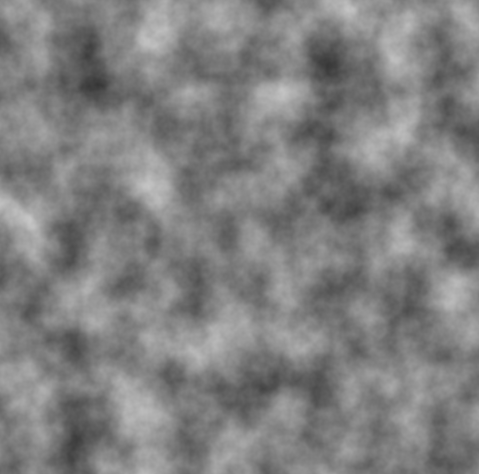
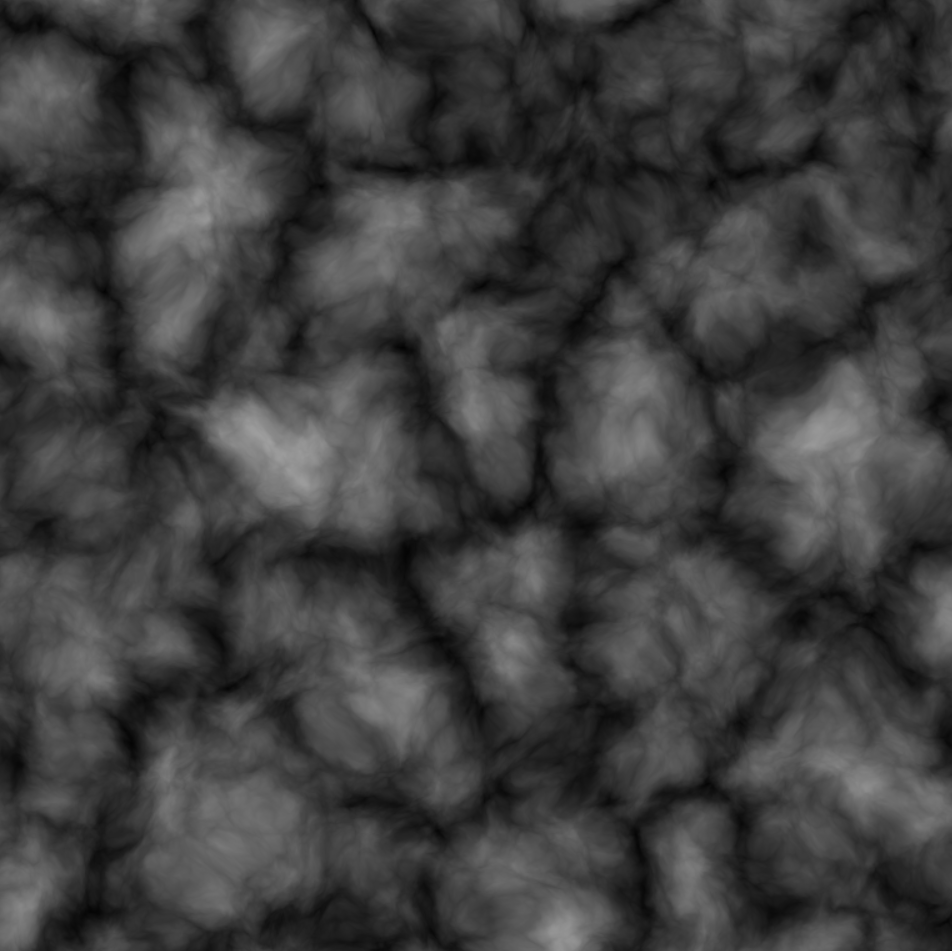
Benutzt man allerdings Sub2-Voronoi Noise, ist das Terrain sehr kantig und überall Bergig. Um nun gleichzeitig schöne Kontinente mit glattem Flachland, aber auch bergigen Gebieten zu erhalten, habe ich das Terrain skaliert mit einer exponentiellen Kurve. Damit wird tiefes Land flacher und hohes Land kantiger. Dabei braucht es sehr viel finetuning, um die richtigen Paramter zu finden, aber ich bin sehr zufrieden mit dem Ergebnis. Um nun Inseln zu generieren, reicht es, das Terrain an den Rändern relativ zum Abstand zum Rand der Map zu skalieren. Manchmal entstehen dadurch zwar unnatürlich gerade Ränder, aber das passiert eher selten und nur dann, wenn das Terrain genau am Rand sehr hoch ist.
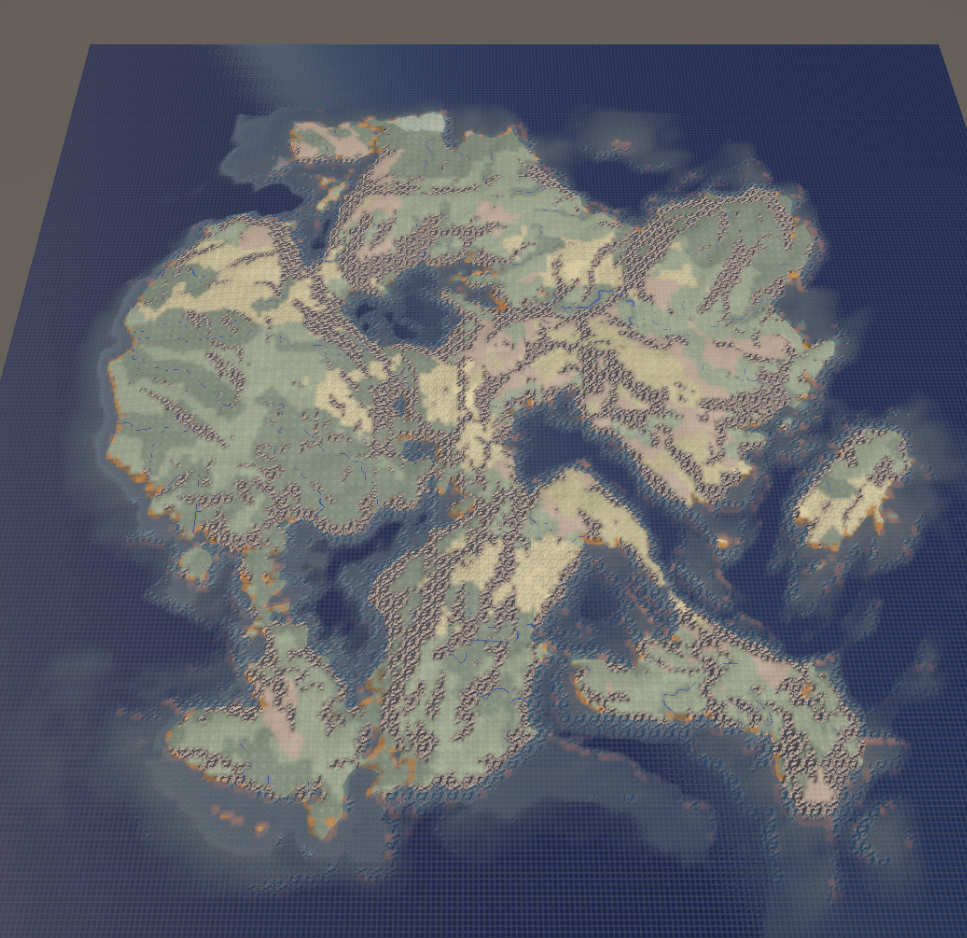
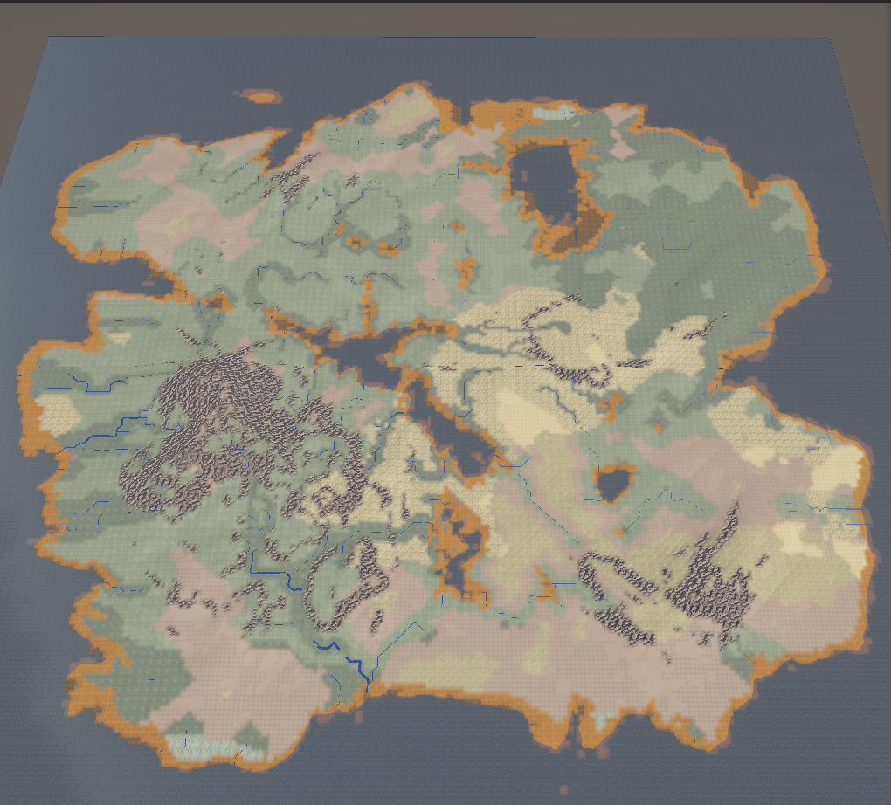
Für das Meer und die Seen verwende ich eine sehr simplen Ansatz: Ich definiere eine Meereshöhe, und alles was darunter liegt, ist Wasser. Nachteil dabei ist, dass unrealistische Seen entstehen, die alle genau auf derselben höhe liegen. Allerdings ist dieser Ansatz sehr einfach zu implementieren, indem das Wasser eine grosse Fläche unter dem Terrain bildet. Was deutlich schwieriger ist sind Flüsse. Was ich wollte war folgendes: Flüsse starten irgendwo, fliessen anschliessend immer bergab, vereinen sich gegebenenfalls mit anderen Flüssen und enden anschliessend im Meer oder einem See. Dass die Flüsse immer bergab fliessen, ist einfach zu implementieren, zum Beispiel mit klassischem Gradient-Descent. Allerdings funktioniert das in der Praxis sehr schlecht, denn es ist nicht garantiert, dass der Fluss im einem Gewässer endet. Tatsächlich landen die meisten so generierten Flüsse so in einem lokalen Minimum, also einem Tal. In der Realität würde sich dann ein See bilden, bis er irgendwann überläuft und der Fluss weiter fliesst. Dazu kommt noch Erosion, also der Prozess dass Flüsse beim fliessen auch gleichzeitig den Boden abtragen und damit Täler bilden. Tatsächlich habe ich beides versucht zu implementieren. Allerdings ist das bilden von Seen erstaunlich schwierig und kompliziert. Erosion zu simulieren ist einfacher, wird auch in der Praxis gemacht, dabei müssen aber sehr viele Erosions-Schritte durchgeführt werden. Eine Implementierung ohne parallellisierung über die GPU ist für eine Generation von weniger als einer Minute zwingend notwendig. Ich habe mich deshalb dagegen entschieden und nach einer weiteren Methode gesucht.
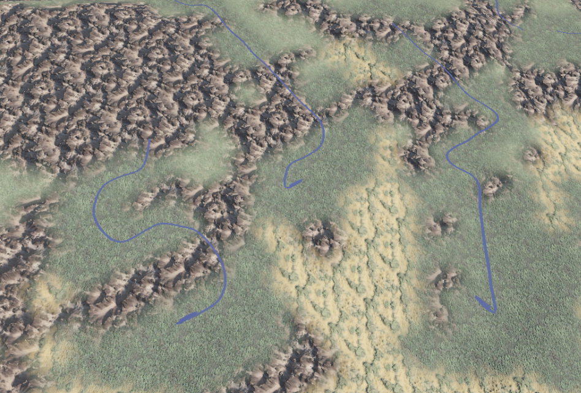
Mir ist aufgefallen, dass das ganze problem mit den lokalen Minimas einfach ignoriert werden könnte, wenn keine solchen im Terrain existieren würden. Anders gesagt: Ich wollte erreichen, dass an jedem beliebigen Punkt auf meiner Map es ein Nachbarfeld gibt, welches tiefer liegt. Wie es sich herausstellte, ist das ein Problem was viele Leute vor mir schon gelöst haben, welches man "Depression Filling" nennt. Ich habe den Algorithmus aus dem Paper Priority-Flood: An Optimal Depression-Filling and Watershed-Labeling Algorithm for Digital Elevation Models implementiert. Über das Resultat war ich sehr erstaunt: Nicht nur verliefen die Flüsse nun alle schön richtung Meer, sondern es entstanden auch meiner Meinung nach sehr schöne und realistische Plateaus, die durch Noise Maps absolut unmöglich sind. Zusätzlich habe ich implementiert, dass Flüsse bergab zunehmend breiter werden. Wenn zwei Flüsse sich treffen vereinen sie sich zu einem Flusslauf. Das Ergebnis sieht ziemlich realistisch aus.
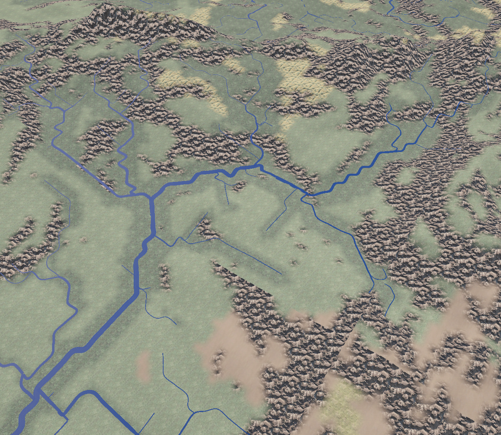
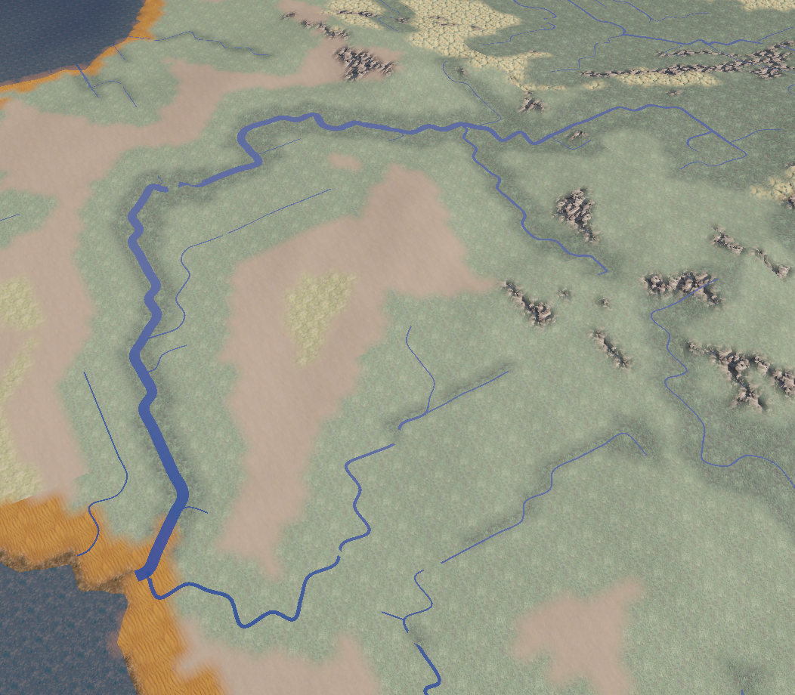
Um Biome zu erstellen, habe ich zuerst recherchiert, welche Biome unter welchen Bedingungen entstehen. Dabei bin ich auf das Whittaker Modell gestossen, welches Biome aus nur zwei Parametern, nämlich Feuchtigkeit und Temperatur, zuweist. Dafür habe ich zwei weitere Noise Maps erstellt, eine für Temperatur und eine für Feuchtigkeit. Letztere ist komplett zufällig, während die Temperatur an den Polen kalt ist und gegen den Äquator immer wärmer wird. Zusätzlich zu der Feuchtigkeit haben auch Flüsse und Seen einen Einfluss auf das Biom. Das kommt besonders gut zur geltung in trockenen Gebieten wie zum Beispiel Wüsten. Um zu erkennen, ob ein Gewässer Süss- oder Salzwassser enthält, habe ich alles auf Süsswasser initialisiert und dann von einer Ecke aus (wo immer Meer ist) mittels Flood-Fill den Ozean versalzen.
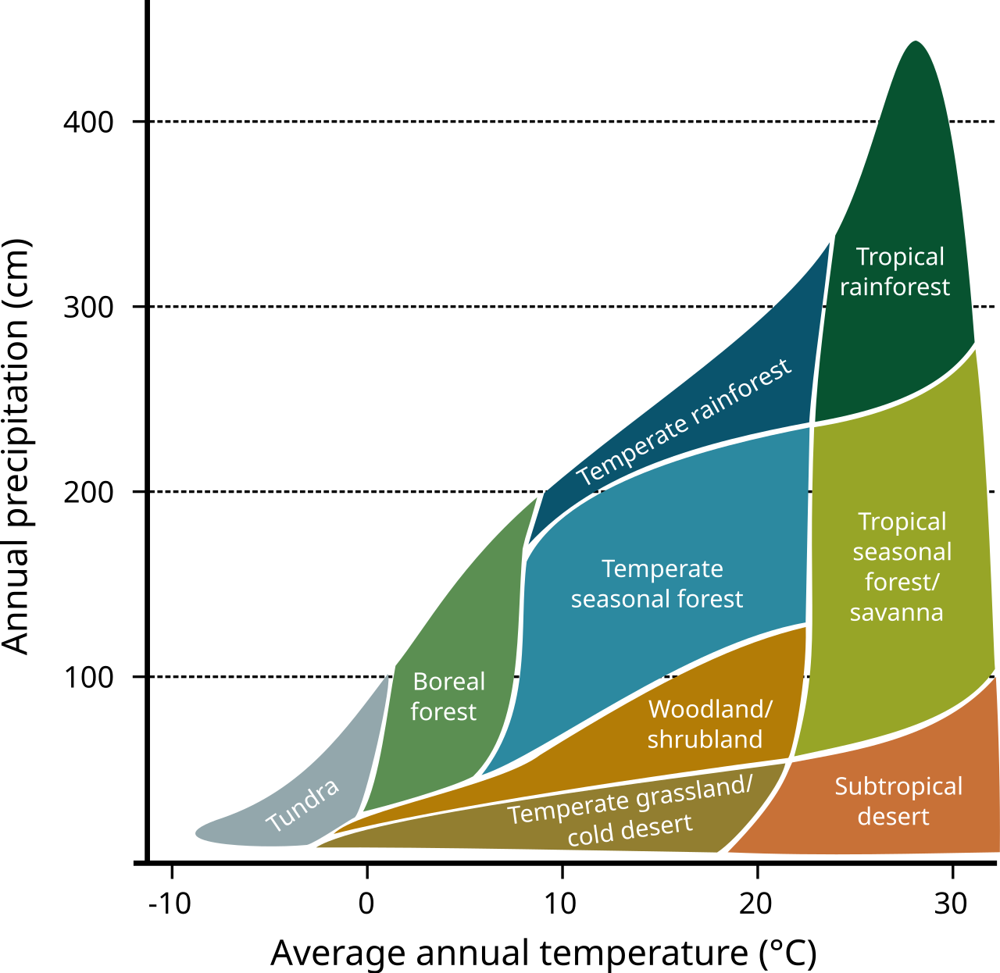
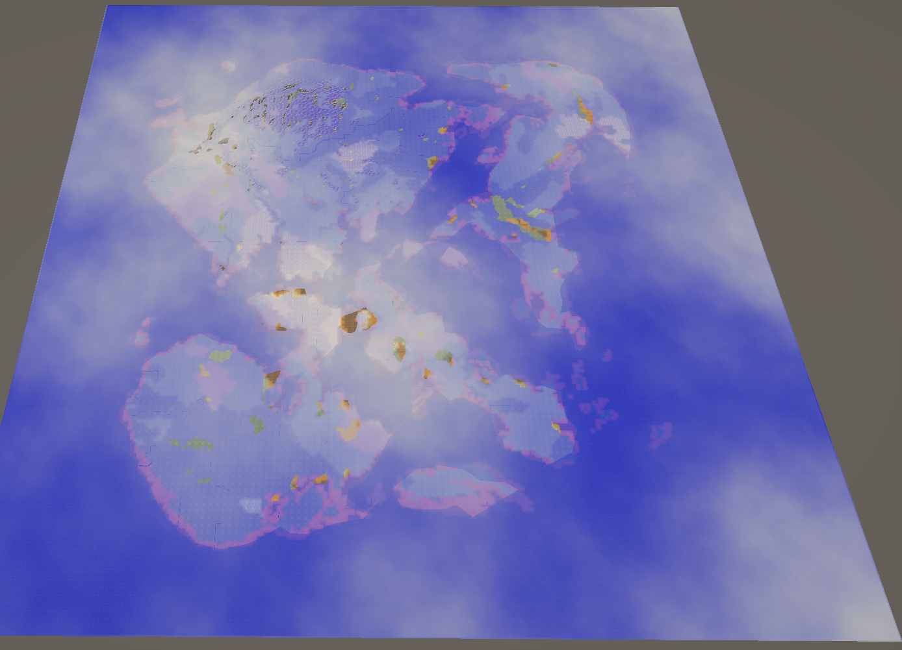
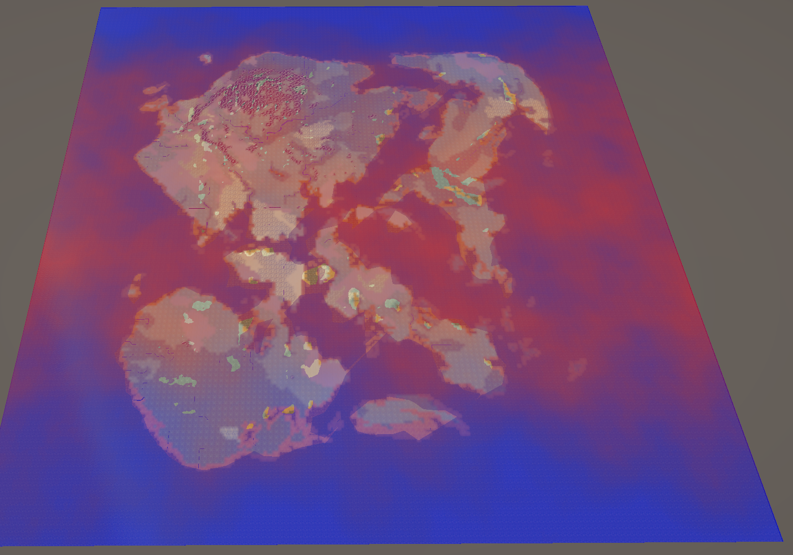
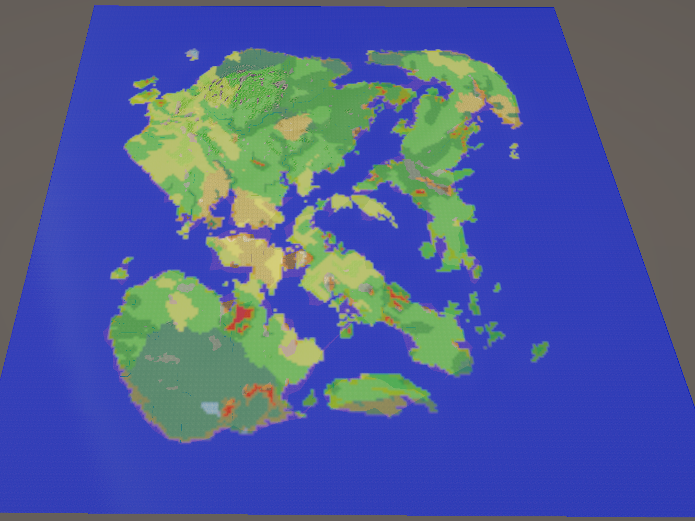
Damit das alles einigermassen schön aussieht, musste ich verschiedene Texturen dem Terrain zuweisen mittels einer Splatmap. Bei Feldern mit einer Steigung von grösser als 30° ist die Textur felsig, ansonsten je nach Biom. Die Flüsse haben mir allerdings Probleme bereitet. Ich benutzte einen LineRenderer, die flüsse sind also nur 2D texturen mit animierten Normal Maps. Damit die Flüsse aber gut aussehen, wären 3D Meshes um einiges schöner.
Die Performance war auch ein Problem. Damit ich grössere Maps generieren konnte, musste ich das ganze in Chunks aufteilen. Um das ganze etwas hübscher zu machen, habe ich Bäume hinzugefügt. Dadurch bin ich leider ein wenig in eine Optimierungs-Hölle gekommen, da es nicht ganz einfach ist, viele Objekte zu generieren und zu rendern. Mit vielem Batching und lediglich 2D Bäumen habe ich es dann hingekriegt, dass das ganze einigermassen flüssig läuft, aber zufrieden bin ich damit nicht. Das Feature ist in der Demo deshalb auch nicht verfügbar.
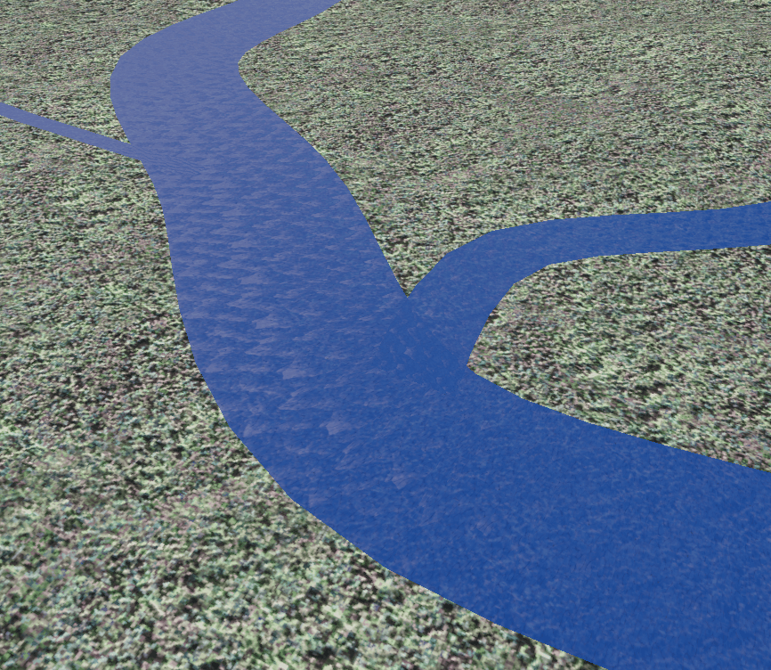
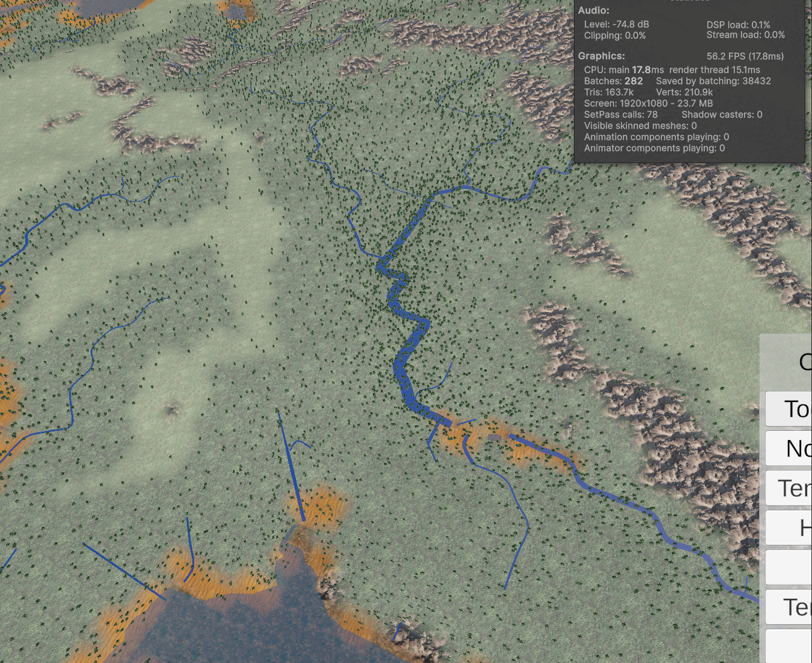
Ein Action-Rogue-Like Game, das ich im Rahmen des Game Development Lab zusammen mit vier Mitstudenten geschrieben habe. Das Hauptfeature ist das Physik-basierte Kampfsystem, bei dem man mithilfe eines elastischen Fadens Gegner und Gegenstände durch die Gegend schleudern kann. Das Spiel kann auf Github gefunden und heruntergeladen werden.
Mein Beitrag ist vor allem der Algorithmus zur Erstellung der Levels. Dabei werden zuerst die Räume plaziert und anschliessend zufällig generiert. Für die Raumerstellung habe ich eine eigene Implementation des Wave Function Collapse Algorithmus verwendet. Schwierig dabei war vor allem zu garantieren, dass immer ein gültiger Weg zum Ausgang existiert. Die Levels werden ausserdem komplexer und schwieriger, je weiter man kommt. Geplant waren ausserdem verschiedene Biome mit unterschiedlichen Raumtypen, allerdings ist uns dann der Künstlerische Aufwand doch zu gross geworden.
Daneben habe ich noch den Sound des Spieles gemacht. Es gibt eine recht simple 3D Audio-Engine, die sounds je nach abstand zum Spieler abspielt. Den Soundtrack stammt ebenfalls von mir, und ich bin ziemlich stolz darauf! Ich habe ihn nicht nur selber komponiert, sondern auch das meiste selbst gespielt auf meinem midi-Keyboard.
Das Spiel wurde mit MonoGame in C# geschrieben. Für die Physik benutzten wir Box2D. Der Rest ist selber implementiert.
Pop the Bubble! ist ein kleines Point and Click Game, welches ich zusammen mit zwei Kollegen am Global Game Jam 2025 kreiert habe. Es ist ein kurzes, humorvolles puzzle Game worin man versucht, eine Blase namens Bubbly Mc-Bubbleface auf 10 verschieden Arten zu zerstören. Das Gesamte Spiel haben wir in 48h geschrieben.
Der Game Jam hat mir super gefallen, es war sehr erfrischend mal einfach drauf los zu programmieren ohne sich gedanken zu machen über Dinge wie Performance, Skalierbarkeit, Clean Code etc. Das Entwickeln hat auf jeden fall mehr Spass gemacht als das spielen des Spiels am schluss. Ich hoffe, bald wieder an einem Game Jam teilzunehmen. Falls du interesse hast, ein Team zu bilden, melde dich einfach bei mir ;)
Das Spiel kann gratis gespielt werden auf Itch.io!
Ein tool für das Boogie-Woogie Training bei meinem Boogie-Woogie Verein, den Crazy Shakers. Spielt automatisch Songs mit dem gewünschtem Tempo aus der riesigen Playlist mit über 1000 Songs. Die Playlist ist aus rechtlichen und kostentechnischen Gründen nicht gehostet und muss separat heruntergeladen werden (die Vereinsmitglieder wissen wo, ansonsten mich anschreiben). Erspart einem das manuelle Heraussuchen von Songs und erhöht die Abwechslung, da man nicht immer nur die obersten Songs abspielt.
Zum Boogie-Woogie Player